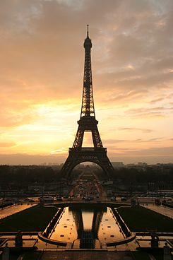
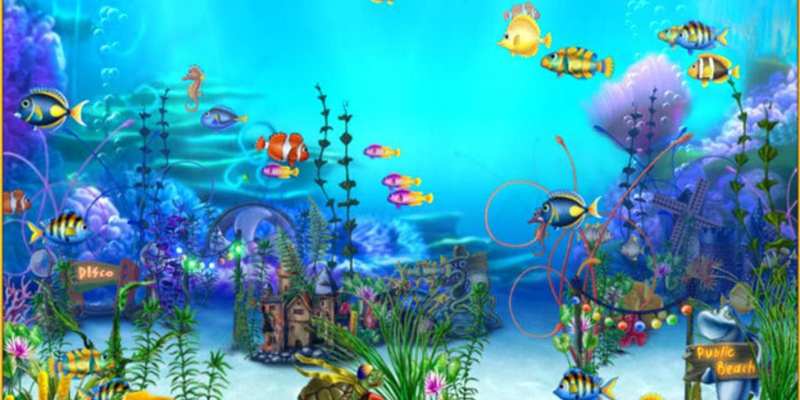

playa
playa
Paris
ciudades
ciudad1
ciudad2
ciudad3
acuariomore_vert
22/07/2018
Los acuarios públicos o aquarium (en su original latino), son instalaciones abiertas al público para ver especies acuáticas en acuarios. La mayor parte de los acuarios públicos presentan una determinada cantidad de tanques más pequeños, así como uno o más depósitos mayores.
informacion personal

Lionel Andrés Messi Cuccittini (Rosario, 24 de junio de 1987), conocido como Leo Messi,6 es un futbolista argentino que juega como delantero o centrocampista,78 y ha desarrollado toda su carrera en el F. C. Barcelona de la Primera División de España y en la selección argentina, de la que es capitán